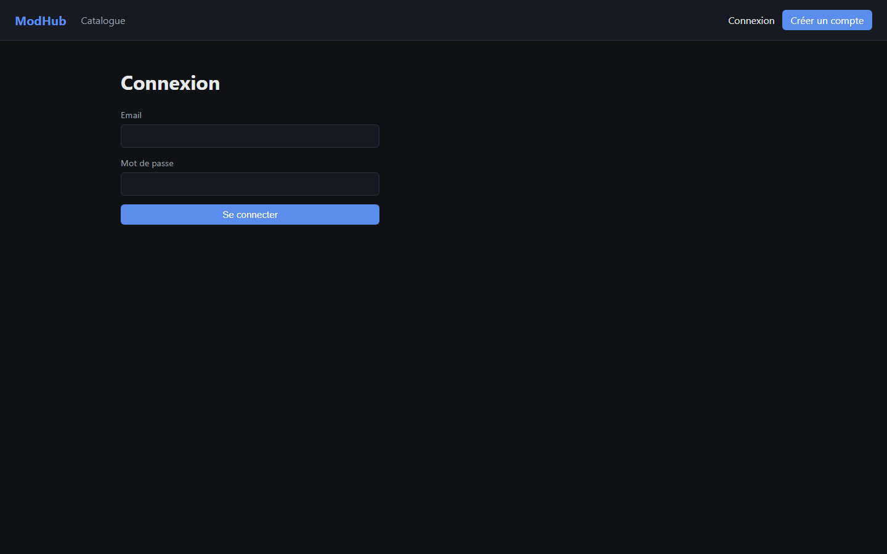
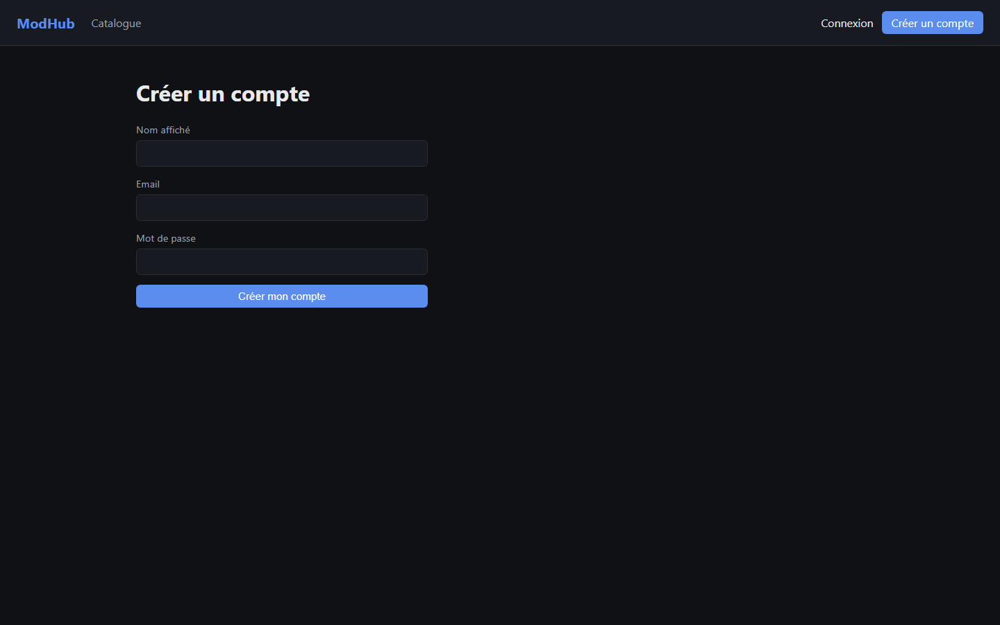
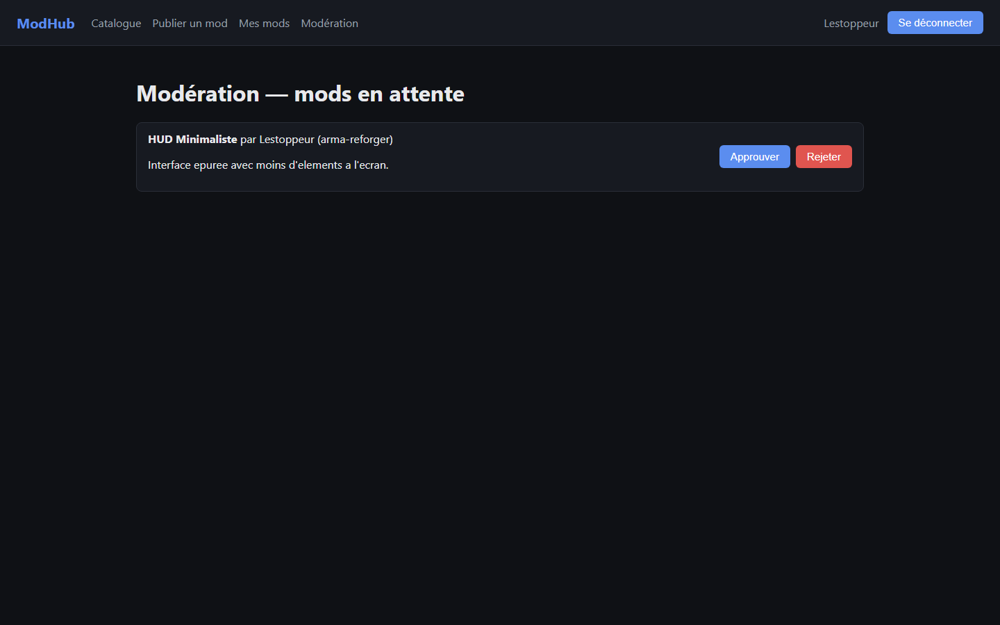
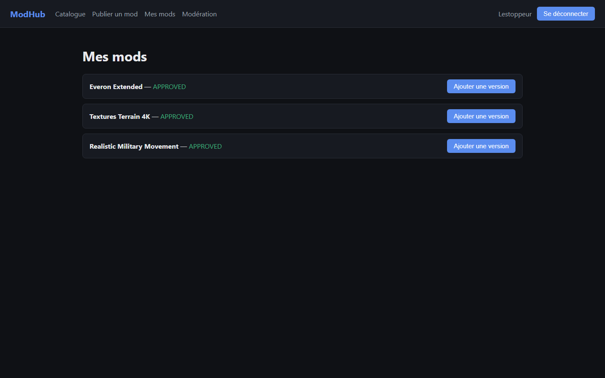

Plateforme communautaire de partage de mods pour jeux vidéo
Dossier de projet
Martin DI NOTA
CEF
Session — Examen blanc
Sommaire
Présentation du candidat4
Mon parcours4
Ma formation4
Ce qui me motive4
Présentation du projet5
Contexte et origine5
Objectifs et public visé5
Fonctionnalités5
Cahier des charges — exigences non fonctionnelles6
Contraintes du projet7
Livrables attendus7
Environnement humain et technique7
Gestion de projet9
Méthodologie9
Outils9
Planning9
Gestion des risques9
Architecture et choix techniques11
Vue d'ensemble11
Modèle de données (MCD, MLD, MongoDB)12
Justification des choix technologiques14
Schéma de déploiement15
Compétences — Bloc 1 : front-end16
Maquetter les interfaces (zoning, wireframe, maquette, enchaînement)16
Réaliser les interfaces statiques18
Développer la partie dynamique19
Compétences — Bloc 2 : back-end23
Base de données relationnelle23
Accès aux données SQL et NoSQL23
Composants métier serveur25
Sécurisation de l'application28
Mesures appliquées28
Sécurité côté front-end28
Veille sur les vulnérabilités de sécurité29
Tests30
Stratégie de test30
Jeu d'essai30
Résultats32
Bilan et perspectives33
Annexes35
1. Présentation du candidat
1.1 Mon parcours
Je m'appelle Martin Di Nota. Avant de me lancer dans le développement web, j'ai passé un CAP serveur et
travaillé dans la restauration. J'ai ensuite été cariste, puis plaquiste. Ce sont des métiers très éloignés du
numérique, mais ils m'ont appris à tenir un rythme, à être fiable sur ce qu'on me confie et à travailler avec des
équipes et des clients très différents. Je retrouve ces habitudes dans la façon dont je développe : avancer étape
par étape et vérifier ce que je livre avant de passer à la suite.
1.2 Ma formation
Je prépare le titre professionnel Développeur Web et Web Mobile au CEF. ModHub est le projet que j'ai
construit pour couvrir l'ensemble des compétences du référentiel (REAC), à la fois pour le bloc 1 (front-end :
maquettage, interfaces statiques, interfaces dynamiques) et le bloc 2 (back-end : base de données relationnelle,
accès aux données SQL et NoSQL, composants métier serveur). Ce dossier correspond au document qui sera présenté
au jury : il respecte donc la structure et les exigences du Référentiel d'Évaluation, et pas seulement le format
d'un exercice interne.
1.3 Ce qui me motive
Ce qui me plaît dans ce métier, c'est de pouvoir créer des choses nouvelles qui servent à tout type de
personne. J'ai envie d'aider les gens avec des outils que je fabrique moi-même. Quand j'ai une idée, je ne veux
plus dépendre de quelqu'un d'autre pour la réaliser : apprendre à développer, c'est gagner cette autonomie et
pouvoir donner vie à mes idées, de la base de données jusqu'à l'écran.
Le choix de ModHub vient aussi de là. Je fais du modding sur Arma Reforger, et j'ai vu de près ce que les
créateurs de mods et les joueurs cherchent : un endroit clair pour publier, trouver et suivre des mods.
2. Présentation du projet
2.1 Contexte et origine
ModHub est une plateforme où les créateurs de mods pour jeux vidéo publient leurs créations, avec leurs
versions et leur changelog, et où la communauté peut les découvrir, les noter, les commenter et suivre leurs mises
à jour. Je suis parti d'un constat : les communautés de modding s'organisent surtout sur des forums, des serveurs
Discord ou des sites tiers, qui ne sont pas faits pour suivre un mod dans la durée (versions, compatibilité,
retours des joueurs).
Je fais moi-même du modding sur Arma Reforger (moteur Enfusion, langage EnforceScript). J'ai notamment corrigé
des comportements du jeu de base, par exemple une limite de véhicules qui n'était pas appliquée quand on plaçait
les véhicules depuis l'éditeur, et j'ai réalisé un mod qui alimente un site de statistiques pour les joueurs. J'ai
donc vu de l'intérieur ce dont un créateur a besoin : publier une version, savoir si elle est utilisée, recevoir
des retours. C'est de là qu'est venue l'idée de ModHub.
Comparaison avec les solutions existantes
Solution
Limite pour le suivi d'un mod dans la durée
Forums génériques
Pas de structure par version : le changelog se perd dans les pages de
discussion, aucun filtre par jeu ou catégorie
Serveurs Discord
Historique difficile à consulter (messages non structurés), pas de fiche
centralisée par mod, aucune notation formelle
Sites de partage génériques (hébergement de fichiers)
Pensés pour un fichier isolé, pas pour une
fiche mod vivante avec versions, notes et commentaires liés
ModHub
Fiche mod unique par mod, versions historisées avec changelog, notation et suivi
personnalisé, métadonnées adaptées à chaque jeu
2.2 Objectifs et public visé
Public
Besoin
Créateurs de mods
Publier un mod, gérer ses versions, suivre son adoption (téléchargements, notes)
Joueurs / communauté
Trouver rapidement des mods pertinents, évaluer leur qualité avant de les
installer, suivre les mods qui les intéressent
Modérateurs
Garder un catalogue de qualité en validant les publications avant diffusion publique
2.3 Fonctionnalités
Catalogue public avec recherche et filtres (par jeu, catégorie)
Fiche mod détaillée : description, versions/changelog, métadonnées spécifiques au jeu, notes, commentaires
Comptes utilisateurs avec rôles (utilisateur / administrateur)
Espace créateur : publication de mods, ajout de versions
Notation et commentaires communautaires
Suivi de mods (follow) et fil d'activité personnalisé
Modération administrateur (validation / rejet des publications)
Formulées en histoires utilisateur (user stories), les fonctionnalités principales se lisent ainsi :
En tant que…
Je veux…
Afin de…
Créateur de mods
publier un mod avec ses métadonnées spécifiques au jeu
le rendre visible
à la communauté une fois validé par un modérateur
Créateur de mods
ajouter une nouvelle version avec un changelog
informer les joueurs des
correctifs et nouveautés sans dupliquer la fiche du mod
Joueur
rechercher et filtrer les mods par jeu ou catégorie
trouver rapidement un mod
pertinent sans parcourir tout le catalogue
Joueur
noter et commenter un mod, puis le suivre
partager mon avis et être informé de ses
futures mises à jour
Modérateur
examiner les mods en attente et les approuver ou les rejeter
garantir la
qualité du catalogue public
2.4 Cahier des charges — exigences non fonctionnelles
Au-delà des fonctionnalités, le cahier des charges impose de traiter un ensemble d'exigences transverses.
Voici, pour chacune, ce qui a été mis en place et ce qui reste une limite connue plutôt qu'un point traité en
façade :
Exigence
Prise en compte dans ModHub
SEO
Balise <title> et meta description
renseignées dans index.html (remplacées depuis le titre par défaut de Vite). L'application
reste une SPA sans rendu serveur : pas de balises meta dynamiques par fiche mod ni de sitemap. Un rendu côté serveur
(SSR) serait l'étape suivante pour un vrai référencement.
Accessibilité
Structure sémantique (header, nav,
main, section, article — voir
5.2), labels associés aux champs de formulaire, boutons et liens natifs (navigation clavier fonctionnelle sans
JavaScript spécifique), palette sombre avec un contraste texte/fond supérieur à 4.5:1. Pas d'audit RGAA complet :
les messages d'erreur asynchrones (ex. échec de connexion) ne sont pas encore annoncés par un attribut
aria-live.
RGPD
Données personnelles collectées limitées au nécessaire (email, pseudo, mot de passe haché) —
aucune donnée sensible. Pas encore de politique de confidentialité ni de fonctionnalité d'export/suppression de
compte : à ajouter avant une mise en production réelle avec de vrais utilisateurs.
Éco-conception
Aucun script de suivi tiers, aucune police web externe chargée depuis un CDN (police
système), API paginée plutôt qu'un chargement complet du catalogue. Pas d'audit Lighthouse formalisé sur ce point.
Sécurité
Traitée en détail section 7 (mesures appliquées, sécurité front-end, veille).
Performance
Index PostgreSQL sur les colonnes les plus filtrées (gameKey,
status), pagination des listes, recherche avec debounce pour limiter les requêtes. Pas
de cache HTTP ni de CDN pour les assets statiques à ce stade.
Responsive
Grille CSS Grid/Flexbox intrinsèquement fluide, complétée par une media query dédiée
sous 640 px pour la navigation et la grille de mods (voir 5.2 et 5.1 pour les maquettes mobile).
2.5 Contraintes du projet
Délai : réalisation en 3 jours (12 au 14 septembre 2026), dans le cadre du calendrier de la
formation — pas de marge pour explorer plusieurs pistes techniques par lot de travail.
Environnement de développement : pas de Docker fonctionnel sur la machine (aucune distribution
WSL2 installée), ce qui a orienté le choix d'hébergement de PostgreSQL (voir 3.2 et 9.1).
Conformité au Référentiel d'Évaluation : le dossier doit couvrir explicitement chaque
compétence du bloc 1 et du bloc 2 avec des preuves concrètes (extraits de code réels, pas de description
théorique seule) — voir la correspondance en annexe 10.2.
Support de remise : le dossier est remis au jury en version papier ; les liens (dépôt GitHub)
ont donc un intérêt de traçabilité mais ne remplacent pas le contenu, qui doit être autoporteur (voir 10.3).
2.6 Livrables attendus
Conformément à la consigne du devoir, trois livrables sont produits et remis séparément :
Un lien vers le dépôt GitHub du projet présenté (code source complet, historique de commits) ;
Le présent dossier de projet, au format PDF ;
Le support de présentation orale, également au format PDF.
2.7 Environnement humain et technique
Le projet a été conçu, développé, testé et documenté seul, dans le cadre individuel de la formation — sans
équipe ni répartition de rôles. L'environnement technique utilisé est le suivant :
Élément
Détail
Poste de travail
PC personnel sous Windows, pas de serveur dédié
Éditeur / outils
Visual Studio Code, terminal intégré, Git
Runtime
Node.js (version LTS), TypeScript
Base relationnelle
PostgreSQL managé (Supabase, offre gratuite) — voir 9.1 pour le choix
Base NoSQL
MongoDB en local (service Windows déjà présent sur la machine)
Hébergement du code
Dépôt Git hébergé sur GitHub, public
3. Gestion de projet
3.1 Méthodologie
Je suis parti du besoin, puis j'ai fixé l'architecture avant d'écrire du code. J'ai ensuite avancé par
tranches complètes et utilisables : d'abord l'authentification de bout en bout, puis le cœur métier des mods, puis
l'interface, puis la sécurité. Je vérifiais chaque tranche au fur et à mesure au lieu de tout tester à la fin —
chaque tranche correspond à un commit Git autonome et fonctionnel (voir 3.3).
3.2 Outils
Besoin
Outil
Gestion de version
Git, dépôt hébergé sur GitHub
Hébergement base relationnelle (développement)
Supabase (PostgreSQL managé)
Base NoSQL (développement)
MongoDB local
Tests
Vitest + Supertest (tests d'intégration)
Suivi de tâches
Jalons suivis via l'historique des commits Git (une tranche verticale livrable par commit)
3.3 Planning
J'ai réalisé le projet en 3 jours, du 12 au 14 septembre 2026, dans le cadre de l'examen blanc. Le travail est
découpé en tranches livrables, chacune correspondant à un ou plusieurs commits Git :
Catalogue, fiche mod, espace créateur, page de modération admin
4 — Sécurité et finalisation
Durcissement CORS, limitation de débit, tests d'intégration,
documentation
3.4 Gestion des risques
Risques identifiés en amont ou en cours de projet, et réponse apportée — les trois premiers se sont
effectivement matérialisés (voir 9.1 pour le détail) :
Risque
Probabilité / impact
Réponse apportée
Environnement de développement incomplet (pas de Docker)
Élevée / élevé — bloque la base
relationnelle prévue
Bascule vers un hébergement managé gratuit (Supabase) plutôt que d'attendre une
réinstallation ; décision prise dès qu'identifié pour ne pas perdre de temps sur le planning de 3 jours
Changement d'API majeur d'une dépendance en cours de projet (Prisma 7)
Moyenne / moyen — risque
de code non fonctionnel basé sur une documentation obsolète
Vérification systématique du comportement
réel de l'outil (essai direct) avant d'écrire du code dépendant, plutôt que de supposer un comportement identique
aux versions précédentes
Délai très court (3 jours) pour couvrir deux blocs de compétences
Élevée / élevé — risque de
dossier incomplet
Découpage en tranches verticales livrables (3.1) : chaque tranche reste utilisable même
si le temps manque pour la suivante, plutôt qu'un développement en couches horizontales tout ou rien
Absence de vrai upload de fichiers (dépendance non branchée)
Faible / moyen — fonctionnalité
dégradée mais non bloquante pour la démonstration
Assumé comme limite connue et documenté explicitement
(7.1) plutôt que masqué, avec une piste de résolution en perspective (9.3)
4. Architecture et choix techniques
4.1 Vue d'ensemble
L'application est composée de deux projets distincts qui communiquent par une API REST :
Le backend est organisé en couches. Chaque couche a un seul rôle, ce qui sépare l'accès aux données de la
logique métier :
Requête HTTP
│
▼
routes/ → déclaration des routes Express, middlewares (auth, rôles)
│
▼
controllers/ → validation des entrées (zod), (dé)sérialisation HTTP
│
▼
services/ → logique métier pure (règles, calculs, orchestration)
│
▼
repositories/ → accès aux données, séparés par technologie
├── sql/ → Prisma / PostgreSQL
└── nosql/ → Mongoose / MongoDB
Le service métier (mod.service.ts) appelle un repository SQL et un repository
NoSQL sans savoir comment chacun fonctionne. Grâce à cette séparation, le code SQL et le code NoSQL restent
chacun dans leur dossier et ne se mélangent pas.
Le contrat entre frontend et backend passe par des interfaces TypeScript dupliquées manuellement côté client
(pas de génération automatique de types dans ce projet), ce qui reste un choix raisonnable à l'échelle d'une
seule API REST simple :
Le MCD identifie cinq entités et leurs associations, en notation Merise (cardinalités entre parenthèses).
Rating et Follow sont modélisées comme de véritables
associations porteuses de données (elles ne portent qu'un attribut ou aucun, et la contrainte d'unicité sur le
couple mod/utilisateur garantit au plus une occurrence par couple, ce qu'exige une association many-to-many
classique). Comment, en revanche, n'a pas cette contrainte d'unicité — un utilisateur
peut commenter plusieurs fois le même mod — elle a donc été reifiée en entité à part entière, identifiée par son
propre id, reliée par deux associations distinctes.
UTILISATEUR
id
email
motDePasseHash
pseudo
role
dateCreation
(0,n) PUBLIE (1,1) →
MOD
id
titre
slug
resume
description
cléJeu
statut
dateCreation
dateMaj
← (0,n) CLASSE (1,1)
CATEGORIE
id
nom
slug
MOD (1,1) POSSEDE (0,n) →
VERSION
id
numeroVersion
changelog
urlFichier
tailleFichier
nbTelechargements
MOD (1,1) CONCERNE (0,n) →
COMMENTAIRE
id
contenu
dateCreation
← (0,n) REDIGE (1,1) UTILISATEUR
Deux associations many-to-many supplémentaires relient directement UTILISATEUR et MOD, chacune avec sa
contrainte d'unicité (0,n)–(0,n) :
Entité 1
Card.
Association
Card.
Entité 2
Attribut porté
UTILISATEUR
(0,n)
NOTE
(0,n)
MOD
valeur
UTILISATEUR
(0,n)
SUIT
(0,n)
MOD
—
4.2.2 Modèle Logique de Données (MLD)
Traduction du MCD en tables relationnelles (clé primaire soulignée, clé étrangère précédée de #) — correspond exactement au schéma Prisma versionné dans prisma/schema.prisma :
Script de création réel, extrait de la migration Prisma versionnée (prisma/migrations/20260912171121_init/migration.sql) :
CREATE TABLE "Mod" (
"id" TEXT NOT NULL,
"title" TEXT NOT NULL,
"slug" TEXT NOT NULL,
"summary" TEXT NOT NULL,
"description" TEXT NOT NULL,
"gameKey" TEXT NOT NULL,
"status" "ModStatus" NOT NULL DEFAULT 'PENDING',
"createdAt" TIMESTAMP(3) NOT NULL DEFAULT CURRENT_TIMESTAMP,
"updatedAt" TIMESTAMP(3) NOT NULL,
"authorId" TEXT NOT NULL,
"categoryId" TEXT NOT NULL,
CONSTRAINT "Mod_pkey" PRIMARY KEY ("id")
);
CREATE UNIQUE INDEX "Mod_slug_key" ON "Mod"("slug");
CREATE INDEX "Mod_gameKey_idx" ON "Mod"("gameKey");
CREATE INDEX "Mod_status_idx" ON "Mod"("status");
ALTER TABLE "Mod" ADD CONSTRAINT "Mod_authorId_fkey"
FOREIGN KEY ("authorId") REFERENCES "User"("id") ON DELETE CASCADE ON UPDATE CASCADE;
ALTER TABLE "Mod" ADD CONSTRAINT "Mod_categoryId_fkey"
FOREIGN KEY ("categoryId") REFERENCES "Category"("id") ON DELETE RESTRICT ON UPDATE CASCADE;
La suppression d'un mod entraîne, en cascade, la suppression de ses versions, notes, commentaires et suivis
(ON DELETE CASCADE). La catégorie, en revanche, ne peut pas être supprimée tant qu'un
mod y est rattaché (ON DELETE RESTRICT) : c'est une décision de modélisation
volontaire pour éviter de laisser des mods orphelins.
Normalisation
Le schéma respecte la 3e forme normale : chaque table n'a qu'une seule clé primaire (1FN, pas de
groupe répétitif — les versions, notes, commentaires et suivis d'un mod sont chacun dans leur propre table plutôt
que des colonnes répétées sur Mod), tous les attributs non-clés dépendent de la
totalité de la clé primaire (2FN — trivial ici, aucune clé primaire composite) et aucun attribut non-clé ne
dépend d'un autre attribut non-clé plutôt que de la clé (3FN — par exemple, le nom de la catégorie n'est jamais
dupliqué sur Mod, seule sa clé étrangère categoryId y
figure).
4.2.3 MongoDB — collections
Collection
Usage
Pourquoi NoSQL plutôt que relationnel
ActivityEvent
Fil d'activité (nouveau mod, nouvelle version, nouveau
commentaire)
La forme du document varie selon le type d'événement (payload
différent pour chaque type) ; écriture fréquente, pas de besoin de jointure
ModMetadata
Champs spécifiques à chaque jeu (ex. identifiant Workshop
et DLC requis pour un mod Arma Reforger, version du moteur et loader pour un mod Minecraft)
Schéma
volontairement variable selon gameKey — le modéliser en relationnel imposerait un
anti-pattern de type EAV (Entity-Attribute-Value)
4.3 Justification des choix technologiques
Choix
Justification
React + TypeScript
Typage statique de bout en bout (partagé conceptuellement entre les types
d'API et les composants), écosystème très documenté, adapté à une interface fortement interactive
Express 5
Minimaliste, laisse le contrôle total sur l'architecture (pas de convention imposée
type NestJS), gestion native des erreurs asynchrones (une exception levée dans un contrôleur async est automatiquement transmise au middleware d'erreur, sans bloc try/catch répétitif)
Prisma
Requêtes typées de bout en bout, migrations versionnées et rejouables, lisibilité du schéma
comme documentation vivante de la base
PostgreSQL (Supabase)
Base relationnelle robuste, hébergement managé gratuit qui évite une
dépendance à Docker/WSL2 indisponible sur la machine de développement
MongoDB
Adapté aux deux cas d'usage identifiés (schéma variable, écriture d'événements),
bibliothèque Mongoose mature pour la validation de schéma côté application
JWT + bcryptjs
Authentification sans état côté serveur (scalable horizontalement), hachage de mot
de passe avec coût réglable ; bcryptjs plutôt que bcrypt pour éviter une dépendance à compilation native
4.4 Schéma de déploiement
En développement, les quatre briques tournent sur des hôtes différents, ce qui a directement influencé les
choix d'hébergement (voir 9.1) :
Navigateur (client final)
│ HTTP
▼
Frontend — React/Vite (build statique ou dev server)
│ HTTP
▼
Backend Express — Node.js, poste local (port 4000)
│
├──▶ PostgreSQL (Supabase) — hébergement cloud gratuit
│
└──▶ MongoDB — service Windows local (pas de Docker requis)
Le frontend et le backend restent deux processus séparés communiquant en HTTP (REST), ce qui permettrait de
les déployer sur deux hébergeurs différents sans changement de code — seule l'URL de l'API (variable
d'environnement FRONTEND_URL côté serveur, URL de base de l'API côté client) devrait
être ajustée.
5. Compétences — Bloc 1 : développer la partie front-end
Compétence
5.1 Maquetter des interfaces utilisateur web ou web mobile
La démarche suivie sur les deux écrans principaux (catalogue et fiche mod) part du zoning, puis passe au
wireframe basse fidélité, en version desktop et mobile, avant d'arriver à la maquette réelle (les captures
d'écran de l'application, présentées section 5.2 et 5.3).
Étape 1 — Zoning
Le zoning découpe l'écran en grandes zones fonctionnelles, sans se préoccuper du contenu ni des composants :
Zone navigation
Zone titre + recherche
Zone liste des mods (répétée)
Zoning — Catalogue (desktop)
Nav
Recherche
Liste (1 colonne)
Zoning — Catalogue (mobile)
Étape 2 — Wireframe basse fidélité (desktop)
ModHub
Catalogue
Connexion
Wireframe desktop — Catalogue
ModHub
★★★★★
Suivre
Wireframe desktop — Fiche mod
Étape 2 bis — Wireframe basse fidélité (mobile)
En dessous de 640 px, la navigation passe sous le logo et la grille de mods repasse en une seule colonne
(voir la media query correspondante en 5.2) :
ModHub
Connexion
Catalogue
Wireframe mobile — Catalogue (1 colonne)
ModHub
★★★★★
Suivre
Wireframe mobile — Fiche mod (empilé)
Ces wireframes sont volontairement simples (boîtes grisées, pas de contenu réel) : ils servent à fixer la
disposition, en desktop comme en mobile, avant de passer au code. L'étape 3 — la maquette réelle — correspond aux
captures d'écran de l'application effectivement construite, visibles à partir de la section 5.2.
Schéma d'enchaînement des écrans
Indépendamment de la disposition de chaque écran (wireframe), ce schéma montre comment on navigue de l'un à
l'autre — les flèches correspondent aux routes déclarées dans App.tsx (voir 4.1) :
┌───────────────────┐
│ Catalogue (/) │◀──────────────────────────┐
└─────────┬─────────┘ │
clic sur un mod │ clic "Connexion" │ clic logo
▼ │ │ "ModHub"
┌───────────────────┐ ▼ │ (accueil)
│ Fiche mod │ ┌───────────────────┐ │
│ (/mods/:slug) │ │ Connexion (/login) │───┘
└─────────┬─────────┘ └─────────┬─────────┘
clic "Suivre"/note/ │ clic "Créer un compte"
commentaire (si connecté) ▼
│ ┌───────────────────┐
│ │ Inscription │──▶ (redirige vers /)
│ │ (/register) │
│ └───────────────────┘
│
lien nav "Mes mods" ▼ lien nav "Publier un mod"
┌───────────────────┐ │
│ Dashboard créateur │◀───────────────┘
│ (/dashboard) │
└─────────┬─────────┘
clic "Ajouter version"│
▼
┌───────────────────┐ lien nav "Modération"
│ Création de mod │ (rôle ADMIN uniquement)
│ (/mods/new) │ │
└───────────────────┘ ▼
┌───────────────────┐
│ Modération admin │
│ (/admin) │
└───────────────────┘
Les routes /dashboard, /mods/new et /admin sont protégées (ProtectedRoute, voir 5.3) : un
utilisateur non connecté est redirigé vers /login, et un utilisateur non-administrateur
tentant d'atteindre /admin est redirigé vers l'accueil.
Compétence
5.2 Réaliser des interfaces utilisateur statiques
Toute la mise en forme est dans une seule feuille de style (index.css), avec les
couleurs définies une fois pour toutes sous forme de variables CSS. Je n'ai pas utilisé de framework CSS : sur un
projet de cette taille, je préfère garder la maîtrise du rendu et éviter une dépendance de plus.
Les pages n'empilent pas des <div> génériques : la structure utilise les
balises sémantiques HTML5 correspondant au rôle réel de chaque zone (extrait de
App.tsx et ModDetailPage.tsx) :
La mise en page utilise Flexbox et CSS Grid (grid-template-columns:
repeat(auto-fill, minmax(260px, 1fr)) pour la grille de mods), ce qui rend le catalogue partiellement
responsive dès la base. Une media query dédiée complète ce comportement pour les petits écrans, en repassant la
grille en une colonne et en faisant passer les liens de navigation sous le logo :
5.3 Développer la partie dynamique des interfaces utilisateur
Voici les principaux mécanismes dynamiques de l'application :
Recherche en temps réel avec debounce — chaque frappe déclenche une nouvelle requête après
300 ms d'inactivité, évitant de saturer l'API à chaque caractère tapé :
Contexte d'authentification global (React Context + hook useAuth)
qui persiste la session en localStorage et pilote l'affichage conditionnel de la
navigation (liens "Publier un mod", "Modération" visibles seulement selon l'état de connexion et le rôle).
Routes protégées (ProtectedRoute) redirigeant vers la page de
connexion si l'utilisateur n'est pas authentifié, ou vers l'accueil si son rôle ne correspond pas à la page
demandée (ex. un utilisateur non admin ne peut pas accéder à /admin).
Formulaires contrôlés avec retour d'erreur asynchrone affiché sans rechargement de page
(inscription, connexion, publication de mod, notation, commentaire).

Fig. 2 — Formulaire de connexion contrôlé, erreur affichée sans rechargement

Fig. 3 — Inscription : validation asynchrone (email déjà utilisé, mot de passe trop faible)
Fig. 4 — Fiche mod : métadonnées, versions et commentaires assemblés dynamiquement depuis deux
sources de données différentes (PostgreSQL + MongoDB)
6. Compétences — Bloc 2 : développer la partie back-end
Compétence
6.1 Mettre en place une base de données relationnelle
Le MCD et le MLD complets sont présentés section 4.2 ; ils sont repris ici du point de vue de leur
implémentation. Le schéma PostgreSQL est défini et versionné via Prisma (prisma/schema.prisma), avec migrations SQL générées et historisées dans prisma/migrations/ (script de création complet en 4.2.2). Extrait du schéma Prisma :
model Mod {
id String @id @default(uuid())
title String
slug String @unique
status ModStatus @default(PENDING)
authorId String
author User @relation(fields: [authorId], references: [id], onDelete: Cascade)
categoryId String
category Category @relation(fields: [categoryId], references: [id])
versions Version[]
ratings Rating[]
@@index([gameKey])
@@index([status])
}
Les contraintes d'unicité composites (@@unique([modId, userId]) sur
Rating et Follow) garantissent au niveau base de données
qu'un utilisateur ne peut noter ou suivre un mod qu'une seule fois, sans dépendre uniquement d'une vérification
applicative — c'est la traduction directe des cardinalités (0,n)–(0,n) du MCD (4.2.1).
Compétence
6.2 Développer des composants d'accès aux données SQL et NoSQL
Deux jeux de repositories cohabitent, chacun encapsulant sa technologie :
Le service métier orchestre les deux sans les mélanger : la création d'un mod écrit l'entité principale en
PostgreSQL puis, si des métadonnées spécifiques au jeu sont fournies, les stocke séparément en MongoDB et
journalise l'événement dans le fil d'activité :
Ce comportement est couvert par un test d'intégration réel (tests/mods.test.ts) qui
crée un mod via l'API, puis vérifie directement en base que le document MongoDB correspondant existe avec les
bons champs — la preuve que les deux bases sont réellement utilisées, pas seulement déclarées dans le schéma.
Séquence d'exécution — création d'un mod
Client (POST /api/mods)
│
▼
routes/mod.routes.ts
→ requireAuth (vérifie le JWT)
│
▼
controllers/mod.controller.ts
→ createModSchema.parse(req.body) [zod, voir 6.3]
│
▼
services/mod.service.ts
→ modRepository.create(...) [PostgreSQL, écriture principale]
→ activityRepository.setMetadata(...) [MongoDB, si métadonnées jeu fournies]
→ activityRepository.record('NEW_MOD') [MongoDB, fil d'activité]
│
▼
Réponse HTTP 201 + mod créé
Les deux écritures MongoDB (métadonnées + événement) ne sont pas transactionnelles avec l'écriture PostgreSQL :
en cas d'échec de l'une des deux, le mod reste créé en base relationnelle. C'est un compromis assumé (pas de
transaction distribuée entre deux moteurs de bases différents) plutôt qu'un oubli — la donnée critique du métier
(le mod lui-même) est celle qui est garantie.
Compétence
6.3 Développer des composants métier côté serveur
La couche services/ concentre les règles métier, par exemple le contrôle de
propriété avant l'ajout d'une version :
async addVersion(modId, authorId, input) {
const mod = await modRepository.findById(modId);
if (!mod) throw new AppError(404, 'Mod introuvable');
if (mod.authorId !== authorId) {
throw new AppError(403, "Seul l'auteur du mod peut publier une version");
}
const version = await modRepository.addVersion(modId, input);
await activityRepository.record('NEW_VERSION', modId, authorId, { versionLabel: version.versionLabel });
return version;
}
Le contrôle d'accès par rôle est un autre composant métier transverse, appliqué via un middleware réutilisable
sur toutes les routes qui en ont besoin (ex. modération, réservée aux administrateurs) :
Autres composants métier notables : calcul de moyenne de notes via agrégation Prisma
(prisma.rating.aggregate), génération de slugs uniques avec normalisation Unicode
(suppression des accents), workflow de modération à trois états (PENDING → APPROVED /
REJECTED) contrôlé par le rôle de l'utilisateur.
Validation des entrées
Chaque route qui accepte un corps de requête déclare son schéma zod, appliqué avant tout accès au repository —
la logique métier ne reçoit donc jamais de données mal formées :
Une entrée invalide (ex. categoryId qui n'est pas un UUID, titre trop court) lève
une ZodError, interceptée par le middleware d'erreur centralisé (7.1) qui répond
400 avec le détail des champs en cause, sans jamais atteindre la base de données.
Référence de l'API REST
Méthode
Route
Auth
Description
POST
/api/auth/register
—
Inscription (limitée en débit)
POST
/api/auth/login
—
Connexion (limitée en débit)
GET
/api/categories
—
Liste des catégories
GET
/api/mods
—
Recherche/liste paginée des mods approuvés
GET
/api/mods/:slug
—
Fiche détaillée d'un mod
GET
/api/mods/feed
Utilisateur
Fil d'activité des mods suivis
GET
/api/mods/mine
Utilisateur
Mods publiés par l'utilisateur connecté
GET
/api/mods/moderation/pending
Admin
Mods en attente de modération
POST
/api/mods
Utilisateur
Création d'un mod
POST
/api/mods/:id/versions
Auteur du mod
Ajout d'une version
POST
/api/mods/:id/ratings
Utilisateur
Notation d'un mod
POST
/api/mods/:id/comments
Utilisateur
Ajout d'un commentaire
POST / DELETE
/api/mods/:id/follow
Utilisateur
Suivre / ne plus suivre un mod
PATCH
/api/mods/:id/moderate
Admin
Approuver / rejeter un mod

Fig. 5 — File de modération : le composant métier de changement de statut est appelé depuis cette
interface, réservée au rôle ADMIN par requireRole
7. Sécurisation de l'application
7.1 Mesures appliquées
Risque (OWASP)
Mesure appliquée
Injection SQL
Aucune requête SQL brute concaténée ; toutes les requêtes passent par l'API
typée de Prisma (requêtes paramétrées par construction)
Injection NoSQL
Les requêtes Mongoose utilisent l'API objet du driver, jamais de construction de
requête à partir d'une chaîne fournie par l'utilisateur
Mots de passe
Hachage bcryptjs (12 rounds), jamais stocké ni renvoyé en clair ; le message
d'erreur de connexion est identique pour "email inconnu" et "mot de passe incorrect" (évite l'énumération de
comptes)
Autorisation
Vérification de propriété et de rôle systématique côté service (pas seulement côté
route) ; ex. modération réservée au rôle ADMIN via middleware
requireRole
Fuite d'information
Middleware d'erreur centralisé : toute erreur non prévue renvoie un message
générique au client, la stack trace complète n'est journalisée que côté serveur
Brute force / credential stuffing
Limitation de débit (express-rate-limit,
20 requêtes / 15 min) sur les routes d'authentification
CORS
Origine restreinte à l'URL du front-end configurée en variable d'environnement, plutôt
qu'une politique ouverte à tout domaine
Exposition de données via Supabase
Row Level Security activée sur les sept tables PostgreSQL
(l'accès applicatif passe par le rôle propriétaire via Prisma, qui n'est pas soumis à RLS ; sans policy, l'accès
via la clé publique Supabase est donc refusé par défaut)
Secrets
Aucun secret commité : .env exclu du dépôt, seul
.env.example (valeurs factices) est versionné
Limite connue : pour l'instant, l'ajout d'une version de mod prend une URL de fichier fournie
par le créateur, pas un vrai envoi de fichier (la bibliothèque multer est installée
mais pas encore branchée). Je l'ai laissé de côté pour tenir le délai de 3 jours, et c'est la première évolution
que je ferais.
7.2 Sécurité côté front-end
Le front-end React échappe automatiquement tout contenu affiché via JSX ({mod.title},
{comment.body}…) : aucune valeur fournie par un utilisateur (titre de mod,
commentaire, pseudo) n'est jamais injectée dans le DOM via dangerouslySetInnerHTML,
ce qui élimine par construction le risque de XSS stocké sur ces champs — vérifié par une recherche exhaustive de
cette API dans le code source (aucune occurrence).
Le jeton JWT est conservé en localStorage plutôt qu'en cookie httpOnly :
Limite connue et compromis assumé : un cookie httpOnly protégerait
mieux le jeton contre une éventuelle faille XSS (un script malveillant ne pourrait pas le lire), au prix d'une
gestion CSRF supplémentaire côté serveur. Le localStorage a été choisi pour la
simplicité dans le délai imparti, en s'appuyant sur l'absence de vecteur XSS identifié (voir ci-dessus) — ce
serait le premier point à revoir avant une mise en production réelle.
Les formulaires utilisent des champs typés natifs (type="email", type="password") qui bénéficient de la validation native du navigateur en complément de la
validation serveur (zod), et aucune donnée sensible (mot de passe) n'est journalisée côté client.
CSRF
Le CSRF (Cross-Site Request Forgery) exploite le fait qu'un navigateur envoie automatiquement les cookies
d'un domaine avec chaque requête vers ce domaine, y compris depuis un site tiers malveillant. ModHub n'utilise
aucun cookie pour l'authentification : le jeton JWT est transmis explicitement dans l'en-tête Authorization: Bearer …, ajouté par le code JavaScript du front-end lui-même. Un site tiers
ne peut donc pas déclencher une requête authentifiée à l'insu de l'utilisateur, ce qui rend une protection CSRF
dédiée (jeton anti-CSRF) superflue avec ce choix d'authentification — elle deviendrait nécessaire si le jeton
était un jour déplacé vers un cookie (voir la limite connue ci-dessus).
7.3 Veille sur les vulnérabilités de sécurité
La veille appliquée sur ce projet repose sur trois leviers concrets, plutôt qu'une simple déclaration
d'intention :
Audit des dépendances — npm audit exécuté sur le backend et le
frontend avant chaque livraison, pour détecter les vulnérabilités connues (CVE) dans les paquets utilisés
(Express, Prisma, jsonwebtoken, bcryptjs, mongoose…).
Alertes automatiques GitHub Dependabot — le dépôt étant hébergé sur GitHub, l'activation de
Dependabot (Settings → Code security) permet de recevoir une alerte et une pull request automatique dès qu'une
vulnérabilité est publiée sur une dépendance du projet, sans surveillance manuelle continue.
Suivi des avis OWASP — le Top 10 OWASP (utilisé comme grille de lecture section 7.1) est
mis à jour périodiquement par la fondation ; le réexaminer à chaque évolution majeure du projet permet de vérifier
qu'aucune nouvelle catégorie de risque n'est apparue depuis la dernière revue.
Concrètement sur ModHub : aucune vulnérabilité de sévérité haute ou critique n'était signalée par npm audit sur les dépendances directes au moment de la rédaction de ce dossier. La veille
reste manuelle (pas encore d'intégration continue programmée) : c'est une limite assumée d'un projet réalisé en
3 jours, pas un point ignoré par méconnaissance.
8. Tests
8.1 Stratégie de test
J'ai choisi d'écrire des tests d'intégration plutôt que des tests unitaires avec des mocks :
chaque test lance l'application réelle (createApp()), l'appelle en HTTP avec Supertest
sur les vraies bases de développement, puis supprime ce qu'il a créé. C'est un peu plus lent, mais ça prouve que
l'application fonctionne vraiment de bout en bout.
it('crée un mod (Postgres) et enregistre ses métadonnées jeu (Mongo)', async () => {
const res = await request(app).post('/api/mods')
.set('Authorization', `Bearer ${token}`)
.send({ title: '…', gameKey: 'arma-reforger', gameMetadata: { workshopId: 'RMM-001' } });
expect(res.status).toBe(201);
const metadata = await ModMetadataModel.findOne({ modId: res.body.id }).lean();
expect(metadata?.fields.workshopId).toBe('RMM-001');
});
Suite
Couverture
tests/auth.test.ts (5 cas)
Inscription (validation mot de passe,
unicité email), connexion (identifiants valides/invalides)
tests/mods.test.ts (4 cas)
Création de mod avec métadonnées croisées
SQL/NoSQL, ajout de version, contrôle de propriété (rejet 403), lecture d'une fiche mod fusionnant les deux
sources
8.2 Jeu d'essai
Deux jeux de données distincts sont utilisés : des données générées dynamiquement pour les tests automatisés
(pour éviter toute collision entre exécutions), et un jeu de données de démonstration fixe pour la démo manuelle
et la présentation orale.
Jeu d'essai automatisé (tests/*.test.ts)
Donnée
Valeur
Compte créateur de test
creator-{timestamp}@modhub.dev /
SuperSecret123 (email horodaté pour rester unique à chaque exécution)
Mod créé
« Realistic Military Movement », gameKey: arma-reforger,
métadonnées { workshopId: 'RMM-001', requiredDLC: ['none'] }
Version ajoutée
« 1.0.0 », changelog « Première version publique », fichier fictif de 1024 octets
Cas d'erreur testé
Un second compte (« Autre ») tente d'ajouter une version sur le mod du premier
compte → 403 attendu
Jeu de données de démonstration (tests/seed_demo.mjs)
Donnée
Valeur
Compte créateur démo
demo-creator@modhub.dev / DemoPass123, promu administrateur pour pouvoir modérer
Mods publiés (approuvés)
« Realistic Military Movement » (catégorie Gameplay), « Textures Terrain
4K » (catégorie Graphismes), « Everon Extended » (catégorie Cartes) — tous gameKey:
arma-reforger, chacun avec un workshopId réaliste
Version supplémentaire
« Realistic Military Movement » reçoit une version 1.2.0 (« Correction de
la synchronisation d'animation en multijoueur »), en plus de sa version 1.0.0 — pour illustrer un changelog avec
historique

Fig. 6 — Tableau de bord du compte de démonstration : les trois mods du jeu d'essai, statut
APPROVED
Cas limites couverts par les tests
Cas
Résultat attendu et vérifié
Mot de passe trop court à l'inscription ("123")
400 — rejeté par le
schéma zod avant tout accès à la base
Inscription avec un email déjà utilisé
409 — contrainte d'unicité User.email respectée
Connexion avec un mauvais mot de passe
401 — message générique identique à "email inconnu" (pas
d'énumération de comptes, voir 7.1)
Ajout de version par un utilisateur qui n'est pas l'auteur du mod
403 — contrôle de propriété
dans mod.service.ts (voir 6.3)
8.3 Résultats
Résultat : 9 tests, 9 succès lors de la dernière exécution complète (12/09/2026), contre les
bases réelles (Supabase + MongoDB) — aucun mock, donc aucun faux positif possible sur le comportement observé.
9. Bilan et perspectives
Indicateur
Valeur
Code source (TypeScript, backend + frontend)
≈ 1 700 lignes
Endpoints REST
13 (voir référence complète en 6.2)
Tables PostgreSQL / collections MongoDB
7 / 2
Tests d'intégration
9 (9 succès à la dernière exécution)
Commits Git (tranches livrables)
6
Durée de réalisation
3 jours
9.1 Difficultés rencontrées
Absence de Docker fonctionnel sur la machine de développement (pas de distribution WSL2
installée) : résolu en basculant PostgreSQL vers un hébergement Supabase gratuit et en découvrant qu'une instance
MongoDB locale était déjà disponible en service Windows.
Changement d'API dans Prisma 7 : la suppression de l'URL de connexion directement dans le
schéma (remplacée par un adaptateur de driver + fichier de configuration séparé) a nécessité une vérification
directe du comportement de l'outil plutôt qu'une hypothèse basée sur les versions précédentes.
Typage strict d'Express 5 sur les paramètres de route (string |
string[]) : traité par une fonction utilitaire de validation plutôt qu'un contournement de type.
9.2 Compétences mobilisées
Concevoir une API en couches (routes, contrôleurs, services, repositories) et séparer l'accès aux données
SQL et NoSQL
Modéliser une base relationnelle avec un MCD puis un MLD, et l'implémenter avec Prisma : clés étrangères,
contraintes d'unicité, migrations
Sécuriser une API : authentification JWT, contrôle des rôles et de la propriété, limitation de débit
Construire une interface React typée, sémantique et responsive, avec authentification et routes protégées
Lire la documentation quand un outil change (Prisma 7) plutôt que de supposer
Au-delà de la technique, ce projet m'a appris à découper un gros travail en étapes que je peux vérifier
une par une, et à documenter honnêtement les limites plutôt que de les dissimuler.
9.3 Perspectives d'évolution
Upload de fichiers réel pour les versions de mods (stockage objet), avec migration du jeton JWT vers un
cookie httpOnly (voir 7.2)
Notifications en temps réel (WebSocket) pour le fil d'activité plutôt qu'un chargement à la demande
Système de tags libres en complément des catégories fixes
Tests de bout en bout côté interface (Playwright) en complément des tests d'intégration API
Rendu côté serveur (SSR) pour le référencement, audit RGAA complet pour l'accessibilité
10. Annexes
10.1 Lexique
Terme
Définition
ORM
Object-Relational Mapping — bibliothèque faisant correspondre les tables d'une base
relationnelle à des objets manipulables dans le code (ici, Prisma)
JWT
JSON Web Token — jeton signé transmettant l'identité et le rôle d'un utilisateur authentifié
sans nécessiter de session stockée côté serveur
MCD / MLD
Modèle Conceptuel / Logique de Données — méthode Merise de modélisation d'une base
relationnelle, du niveau entités-associations (MCD) au niveau tables-clés (MLD)
EAV
Entity-Attribute-Value — anti-pattern relationnel consistant à stocker des attributs
dynamiques ligne par ligne plutôt qu'en colonnes, évité ici grâce au NoSQL
RLS
Row Level Security — mécanisme PostgreSQL restreignant l'accès aux lignes d'une table selon
le rôle de connexion
RGAA
Référentiel Général d'Amélioration de l'Accessibilité — référentiel français d'accessibilité
numérique
10.2 Correspondance avec le Référentiel d'Évaluation
Table de correspondance entre les compétences attendues (REAC Développeur Web et Web Mobile) et les sections
de ce dossier qui en apportent la preuve :
Compétence du référentiel
Section
Maquetter des interfaces utilisateur web ou web mobile
5.1
Réaliser des interfaces utilisateur statiques
5.2
Développer la partie dynamique des interfaces utilisateur
5.3
Mettre en place une base de données relationnelle
4.2.1, 4.2.2, 6.1
Développer des composants d'accès aux données SQL et NoSQL